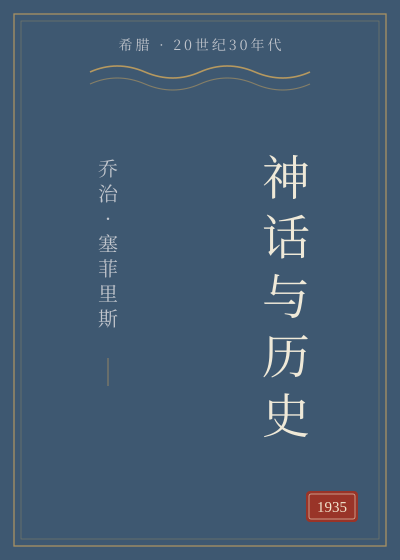

神话与历史
一、基本信息
| 作者 | 乔治·塞菲里斯 |
|---|---|
| 成书/出版 | 1935年（Britannica B356：Mithistórima (1935; Myth-History)） George Seferis — Encyclopaedia Britannica（百科全书） |
| 国别/地区 | 希腊 |
| 时代 | 现当代 · 20世纪30年代 |
| 体裁 | 诗集 |
| 语言 | 希腊语 |
《神话与历史》神话对位图（主题·结构图）
二、创作背景
Britannica（B356）：塞菲里斯——'the most distinguished Greek poet of the generation of the 30s'——其作'shows a deep feeling for the tragic predicament of the Greeks'。
Britannica（B356）：Strofí (1931) 出版时被誉'the poet of the future'——本集为其中期代表作。
题材（通说待核）：以神话人物（奥德修斯等）折射现代希腊的流亡与离散。
三、内容脉络
神话与历史的对位：古典之'神'与现代之'史'（B356 书名语境；篇目通说待核）。
流亡者的海：爱琴海的记忆政治（通说待核）。
四、主要人物表
| 人物 | 身份 | 说明 |
|---|---|---|
| 抒情'我' | 外交官诗人 | （B356 语境） |
五、主题与艺术特点
- 希腊人的悲剧处境（B356）。
- 神话的现代化（B356：Myth-History）。
- 流亡与离散（通说待核）。
六、影响与评论
- Britannica：1963年诺贝尔文学奖——首位希腊得主（B356；'first Greek literature Nobel laureate' 见 B357 交叉）。
George Seferis — Encyclopaedia Britannica（百科全书） - Britannica：'the poet of the future'（B356——Strofí 之誉）。
George Seferis — Encyclopaedia Britannica（百科全书）
七、阅读建议
难点
- 希腊神话典故。
- '30一代'的语体。
- 《神话与历史》中译名（通说待核）。
- 希腊文原版。
塞菲里斯进阶；先读《转折点》。
八、待核实
- 具体篇目（《王亚辛》未见于B356）核对。
- 1935年出版细节待核。
- 中译名两说（《神话与历史》/《神话史》)待核。
本页主要来源
乔治·塞菲里斯的其他收录作品：神话与历史